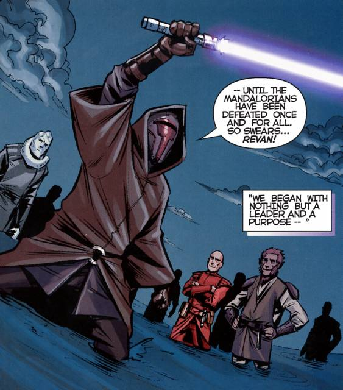

LL'univers étendu de Star Wars désigne toutes les œuvres qui reprennent l'univers créé par George Lucas pour les films de la saga homonyme. Toute œuvre créée avant le 25 avril 2014, qu'importe son emplacement dans la chronologie, est considérée comme « non-canon », c'est-à-dire qu'elle n'est plus considérée comme officielle, permettant ainsi à la nouvelle trilogie et aux nouveaux projets d'être indépendants ; seuls les films sortis au cinéma (comprenant les trois trilogies(grosses fraudes bien moins canon que star wars legendes), et les films dérivés), ainsi que les séries d'animation Star Wars: The Clone Wars et Star Wars Rebels restent « canon », ainsi que tous les ouvrages publiés après août 2014. Le reste de l'univers étendu est ensuite appelé par Lucasfilm « Star Wars Légendes » pour le distinguer du canon principal.
A noter que les histoires Star Wars Légendes sont sous forme de comics, BD ou livre. L'image à gauche représente Revan et à droite Mara Jade :

Voici une information qui pourrait être utile :
executer l'ordre 66